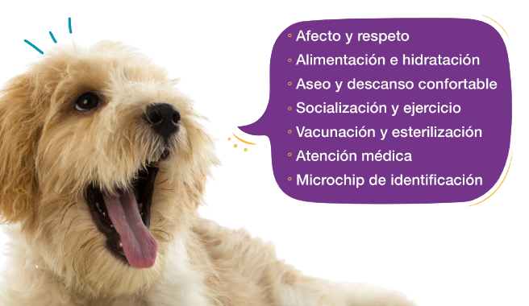
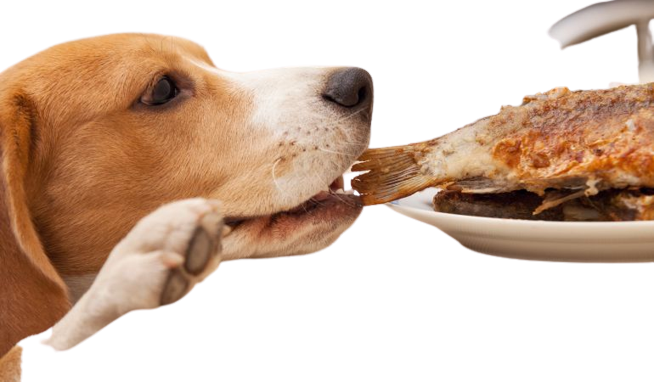
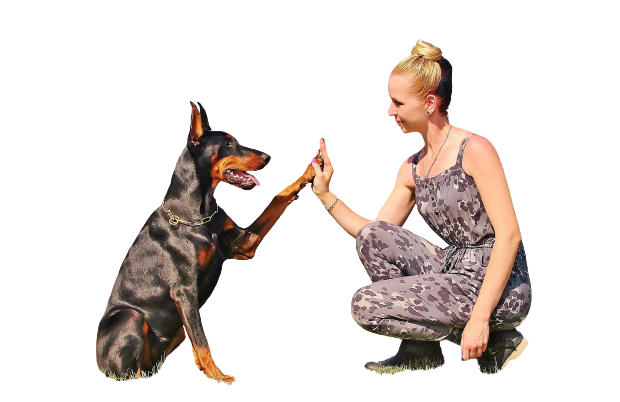
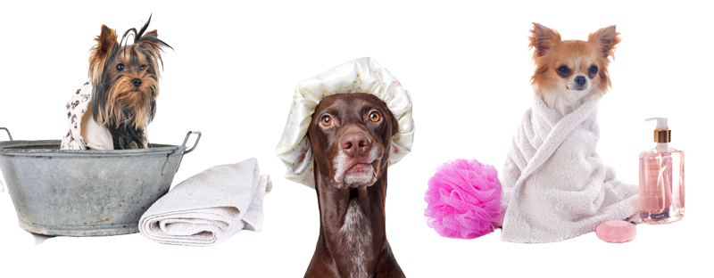
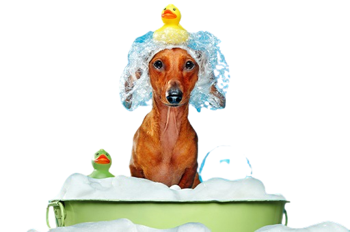
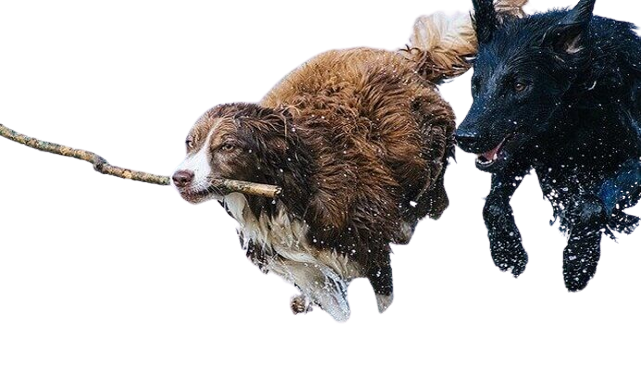

Tipos de Cuidados para tu Mascota
Alimentación de calidad. Elegir un pienso nutritivo y darles una buena
hidratación es clave para el bienestar de los perros, educación animal,
higiene del perro, paseos y actividad física, atención y cuidados veterinarios.

Alimentacion calidad
Los mejores alimentos para perros son el arroz, las carnes y los pescados y de frutas el
plátano, el melón, la pera y la manzana. En cuanto a las verduras las opciones preferentes
son las espinacas, la zanahoria y la lechuga.

Educacion animal
La Educación Asistida con Animales (EAA) es una disciplina relativamente nueva, consistente
en mejorar o facilitar el aprendizaje de los estudiantes mediante la inclusión de animales
en la práctica educativa.

Higiene del perro
Otros hábitos higiénicos para tu mascota además del baño
Además de limpiar la piel y pelaje de tu perro o gato,
para higienizar a tu mascota de forma más completa,
te recomendamos adoptar mayores hábitos de limpieza como:
Cepillado de pelo constante y frecuente.

Aseo para tu mascota
La higiene, el cuidado de animales domésticos y sobre todo el cuidado de las mascotas, es de
suma importancia en la medida que previenen muchas enfermedades e infecciones, se evitan
olores desagradables, propagación de parásitos, etc.

Actvidad fisica canina
Los animales pueden ser tratados como sistemas abiertos que intercambian materia y energía
con su entorno y que ejercen un cierto control sobre esos intercambios. Agua, sales,
elementos estructurales, energía química, oxígeno, calor, así como los restos químicos de
sus actividades
